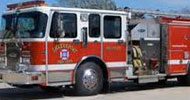

The rate of illnesses, injuries and fatalities has decreased overall in Minnesota over the last two decades in many career fields. However, the need for increased safety awareness continues. According to the Minnesota Safety Council there were 3.8 work related injuries for every 100 full time workers in 2009. The Safety Council reports that the same year workers sustained 78,100 injuries and illnesses while on the job. When ranked by specific industry the Minnesota Department of Labor and Industry (2013) found that Nursing and Residential care
facilities had the highest rate of injuries and illnesses (about 14 injuries for every 100 workers). The ranking was fallowed in order by workers in Local government Utilities (10.4), Crop Production (10.3), Furniture and Related Product Manufacturing (9.8),local Government

justice, order and safety activities (9.3), Primary metal manufacturing (8.9), Beverage and Tobacco product manufacturing (8.7) and construction (7.8). In addition to the high injury rate there are a variety of medical conditions and illnesses that workers suffer from as a result of the hazards they face. The top three medical conditions and illnesses that result from hazardous work conditions include hearing-loss (23.9%), skin diseases and disorders (13.0%) and Respiratory conditions (8.7%). A variety of
conditions and diseases make up the remainder of the cases. Injuries and illnesses can result in workers needing to miss work or transfer. While these incidences have decreased in recent years intervention is still needed. Sadly some workers fall victims to the hazards they face. In 2012 there were 67 fatal work accidents in Minnesota. The leading cause was transportation accidents and incidents according to the department of Labor and Industry, 2014).